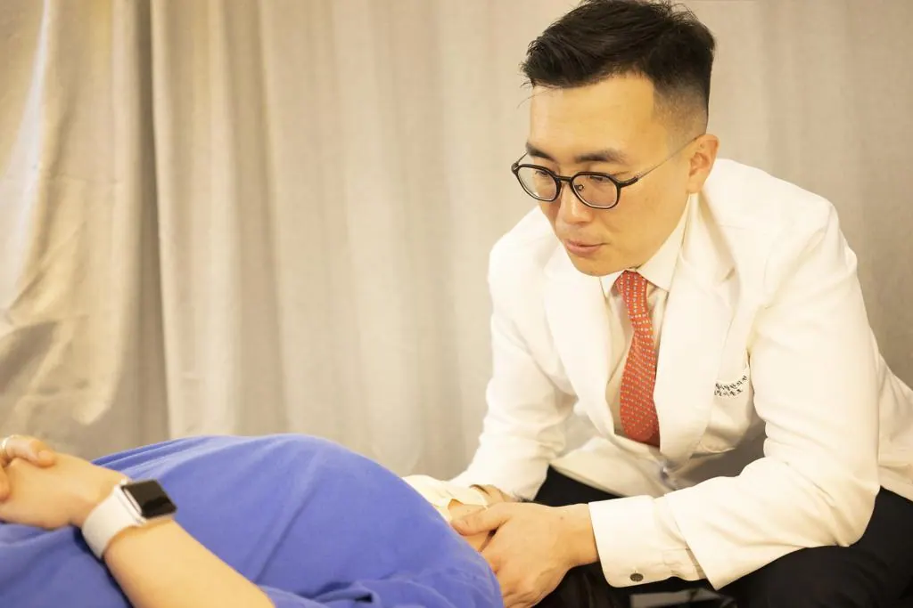
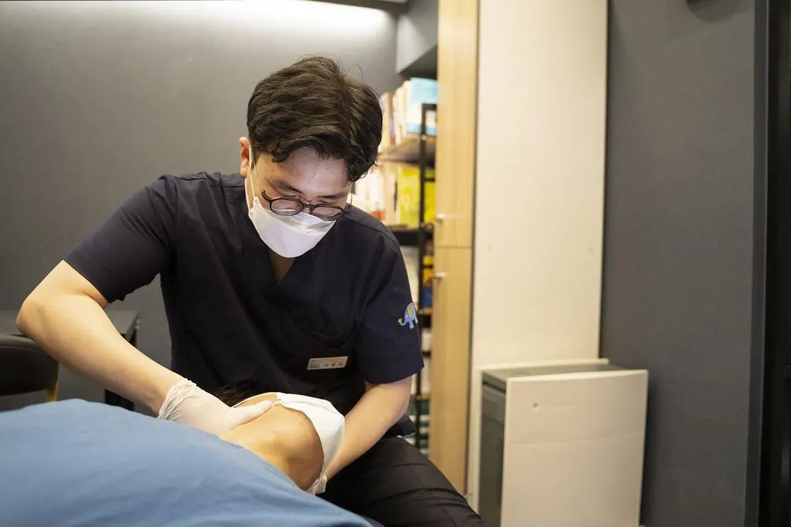
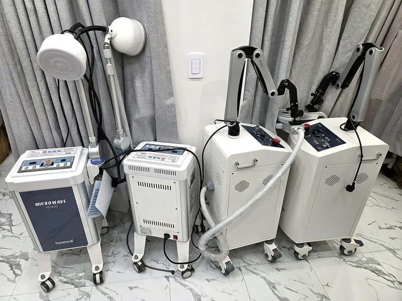
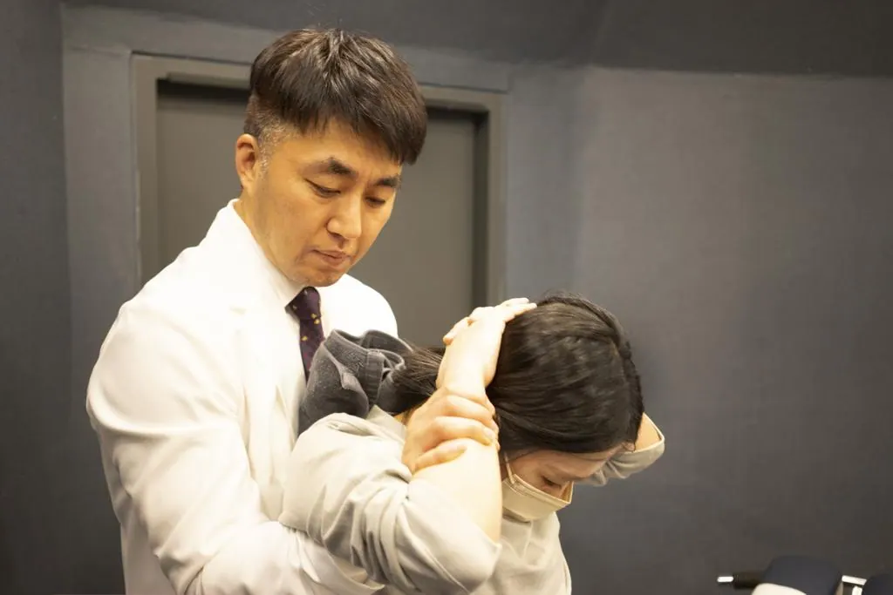
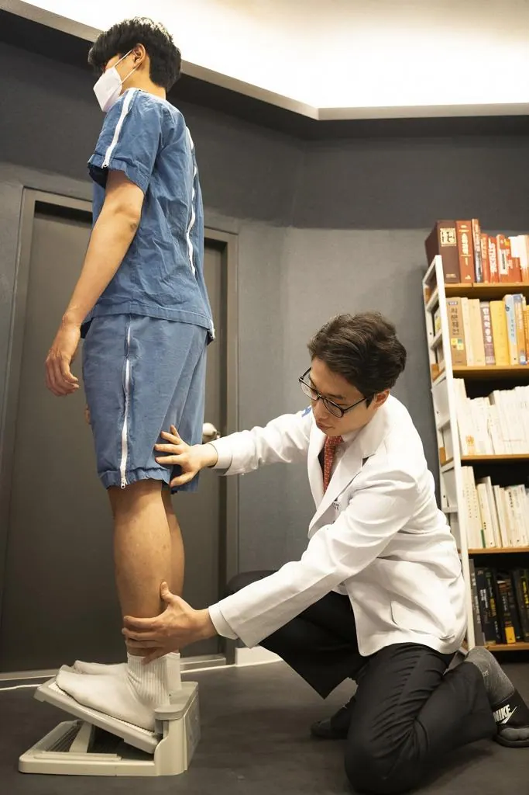

어깨, 팔꿈치, 발뒤꿈치, 무릎 주변처럼 힘줄과 근육이 붙는 부위가 오래 불편한 분을 위한 안내입니다. 체외충격파는 몸 밖에서 아픈 부위에 충격파 에너지를 전달하는 방법이며, 좋은꿈참사랑한의원은 통증 부위를 넓게 살핀 뒤 시간과 강도를 조금씩 조절하며 진행합니다.

어느 부위를, 어떤 강도로
체외충격파는 몸 밖에서 기계적 에너지를 조직에 전달하는 치료입니다. 힘줄이나 근막처럼 잘 회복되지 않는 조직의 통증에 상태를 보고 적용을 검토합니다. 저희가 가장 신경 쓰는 것은 충격파를 쏘는 일 자체보다 어디에, 얼마나 할지를 판단하는 일입니다.
이런 분께
적용할 수 있는 부위와 범위는 진찰 후 안내합니다. 미리 궁금하시면 방문 전 전화로 확인해 주세요.
- 힘줄이나 근막 부위 통증이 오래가는 분
- 같은 동작을 많이 반복해 생긴 통증이 있는 분
- 오래된 근육·힘줄 부위 통증으로 불편한 분
진료 과정
- 통증 위치와 압통점을 확인합니다.
- 필요하면 초음파로 힘줄과 주변 조직을 살핍니다.
- 주요 치료 부위를 정하고 기록합니다.
- 반응을 살피며 강도를 조절합니다.
- 치료 뒤 상태와 다음 치료 방향을 확인합니다.
체외충격파는 어떤 방법인가요?
피부를 절개하지 않고, 장비의 끝부분을 아픈 부위에 대고 짧은 충격파를 반복해서 전달하는 방법입니다. 받는 동안 두드리는 느낌이나 시큰한 느낌이 들 수 있어 반응을 보며 강도를 맞춥니다.
충격파 에너지는 힘줄과 근육이 붙는 부위처럼 오래 불편한 곳에 주로 쓰이며, 한 번에 많이 받기보다 간격을 두고 반응을 보며 진행하는 것이 일반적입니다. 받은 뒤 하루 이틀 시큰함이 남을 수 있어 그 변화도 함께 여쭙습니다.
상담에서 자주 듣는 부위
이런 부위는 같은 동작을 반복하는 생활과 관련되는 경우가 많아, 일이나 운동에서 어떤 동작을 자주 하는지도 함께 여쭙습니다.
- 팔을 들어 올릴 때 어깨가 걸리는 느낌
- 물건을 쥘 때 팔꿈치 바깥쪽 통증
- 아침 첫발을 디딜 때 발뒤꿈치 통증
- 점프나 계단 뒤 무릎 아래 통증
먼저 이렇게 여쭙니다
- 몸에 금속 삽입물이나 심장박동기 같은 전자 의료기기가 있나요?
- 혈액을 묽게 하는 약을 드시나요?
- 임신 중이거나 가능성이 있나요?
- 치료 부위 피부에 상처나 염증이 있나요?
- 최근 같은 부위에 주사 치료를 받았나요?
받기 전후로 기억할 것
받은 부위는 세게 주무르기보다 가볍게 쉬어 주고, 평소와 다른 붓기나 통증이 있으면 전화로 문의해 주세요.
- 받은 날은 무리한 운동 줄이기
- 통증이 커지는 동작과 시간 메모하기
- 다음 방문 때 그사이 변화 이야기하기
- 붓기나 멍이 오래가면 바로 연락하기
한의원에서 함께 살피는 것
좋은꿈참사랑한의원은 제우스와 한일티엠 두 종류의 체외충격파 장비를 갖추고 부위와 상태에 맞는 장비를 고릅니다. 필요하다고 판단될 때 초음파로 부위를 확인하고 침, 약침, 추나와 이어서 씁니다. 대상, 횟수, 비용은 진찰 후 안내합니다.
체외충격파만으로 진료를 끝내기보다 자세와 생활 동작을 함께 살핍니다.
체외충격파를 받기 어려운 경우
아래에 해당하면 체외충격파 대신 다른 방법을 먼저 검토하거나, 확인 후 신중하게 진행합니다. 해당하는지 헷갈리면 상담 때 편하게 말씀해 주세요.
- 임신 중인 경우
- 치료 부위에 종양이 있거나 의심되는 경우
- 혈액 응고에 문제가 있거나 관련 약을 복용하는 경우
- 치료 부위에 감염이나 상처가 있는 경우
- 성장판이 열려 있는 어린이의 성장판 부위
이럴 때는 다른 진료를 먼저 받으세요
아래와 같은 경우에는 체외충격파보다 원인 확인이 먼저입니다.
- 넘어지거나 부딪힌 뒤 붓고 움직이기 어려울 때: 영상검사 먼저
- 부위가 빨갛고 뜨거우며 열이 날 때
- 팔다리 힘이 빠지거나 저림이 퍼질 때
- 밤에 쉬어도 통증이 심해질 때
좋은꿈참사랑한의원 진료는 이렇게 진행됩니다
상담에서 불편한 동작을 듣고, 아픈 부위와 주변을 넓게 눌러 보며 예민한 지점을 찾습니다. 체외충격파가 필요하다고 판단되면 낮은 강도부터 시작해 반응을 보며 조절하고, 다음 진료에서 같은 동작으로 변화를 확인합니다.
치료 기록에는 받은 부위, 강도, 받은 뒤 느낌을 남겨 두고 다음 진료에서 같은 동작으로 비교합니다. 몇 번 받았는지보다 일상 동작이 어떻게 달라졌는지를 함께 봅니다.
상도동·노량진에서
노량진 학원가의 수험생은 펜을 쥐는 손목과 팔꿈치를, 직장인은 마우스를 쓰는 어깨를, 상도동 어르신은 계단을 오르내리는 무릎과 발뒤꿈치를 이야기하곤 합니다. 좋은꿈참사랑한의원은 상도역 3번 출구에서 걸어서 올 수 있고, 건물 옆 주차 공간 2면과 하늘빛교회 지하주차장을 이용할 수 있습니다. 노량진역 3번 출구에서는 마을버스 동작01번을 타고 신동아리버파크 정류장에서 내리면 됩니다.
자주 묻는 질문
충격파는 세게 받을수록 좋은가요?
그렇지 않습니다. 강도가 높다고 반드시 좋은 것은 아니며, 환자분이 견딜 수 있는 범위 안에서 상태에 맞게 조절합니다. 불편하시면 바로 말씀해 주세요.
받을 때 아픈 곳이 더 뚜렷하게 느껴지는 이유는요?
시술 중 느껴지는 압통과 반응은 문제 부위를 확인하는 참고 정보가 됩니다. 그 반응을 보며 위치와 강도를 맞춥니다.
침 치료와 무엇이 다른가요?
침은 경혈과 근육에 직접 자극을 주고, 충격파는 몸 밖에서 에너지를 전달합니다. 상태에 따라 하나만 하거나 함께 진행합니다.
체외충격파를 받으면 안 되는 경우도 있나요?
임신 중, 시술 부위 감염이나 종양, 혈액 응고 장애가 있는 경우 등은 적용하지 않거나 신중히 판단합니다. 진료 전에 건강 상태를 알려 주세요.
상도동에서 체외충격파 진료를 하는 한의원이 있나요?
좋은꿈참사랑한의원(서울 동작구 만양로2길 2 신성빌딩 3층·5층)에서 진찰 후 필요하다고 판단될 때 체외충격파를 사용합니다.
체외충격파는 아픈가요?
시큰하거나 두드리는 느낌이 들 수 있습니다. 불편하면 바로 말씀해 주시면 강도를 조절합니다.
체외충격파는 몇 번 받아야 하나요?
부위와 상태에 따라 다릅니다. 진찰 후 반응을 보며 함께 정합니다.
몸에 금속 나사가 있어도 받을 수 있나요?
먼저 알려 주세요. 부위와 삽입물 종류를 확인한 뒤 적용 여부를 정합니다.
체외충격파를 받은 날 운동해도 되나요?
무리한 운동은 그날 하루 줄이시길 권합니다. 자세한 내용은 진료 때 안내합니다.
어떤 체외충격파 장비를 쓰나요?
제우스와 한일티엠 두 종류를 갖추고 부위에 맞게 고릅니다.
평일 저녁에도 받을 수 있나요?
평일은 오후 8시까지 진료합니다. 예약은 네이버 예약이나 02-815-7510으로 하실 수 있습니다.
체외충격파와 침을 같은 날 받아도 되나요?
상태에 따라 같은 날 이어서 쓰기도 합니다. 진찰 후 필요한 방법만 연결합니다.
체외충격파도 보험이 되나요?
대상과 비용은 진찰 후 안내합니다. 궁금하시면 방문 전 02-815-7510으로 문의해 주세요.
감수: 좋은꿈참사랑한의원 대표원장 이종호 · 마지막 확인 2026-11-25 · 일반적인 건강 정보이며 진단·치료를 대신하지 않습니다.
체외충격파 글 모아 보기 (13편)

체외충격파를 받는 날은 어떤 옷을 입고 가면 좋을까요?
체외충격파는 아픈 부위를 직접 확인하며 진행하므로 그 부위를 쉽게 걷거나 드러낼 수 있는 편한 옷이 좋고, 어깨는 단추 셔츠나 넉넉한 상의, 무릎과 발은 걷어 올리기 쉬운 바지가 편합니다.
수정 2026-11-25

족저근막염 통증에 체외충격파는 어떻게 사용하나요?
발뒤꿈치 통증은 아침 첫걸음 통증과 아픈 위치, 신발과 서 있는 시간을 먼저 확인하고, 필요하다고 판단될 때 체외충격파의 시간과 세기를 조금씩 조절하며 종아리와 발바닥 관리를 함께 안내합니다.
수정 2026-11-25

체외충격파 전에 꼭 미리 말씀해 주셔야 하는 경우는요?
임신, 혈액 응고 관련 약 복용, 치료 부위의 감염이나 원인 모를 혹, 심장박동기, 최근 수술이나 주사 치료를 받은 부위는 체외충격파 전에 먼저 확인이 필요해서, 진찰에서 여쭙고 적용 여부를 정합니다.
수정 2026-11-25

체외충격파를 받기 전에 먼저 확인이 필요한 경우는 어떤 때인가요?
임신 중이거나 심장 박동기 같은 의료기기를 쓰거나, 치료 부위에 감염·종양·최근 골절이 있거나, 피가 잘 멎지 않는 경우에는 체외충격파 전에 먼저 확인이 필요합니다.
수정 2026-11-25

엄지 쪽 손목이 아파 휴대폰 쥐기도 불편할 때는 어떻게 살피나요?
엄지 쪽 손목 통증은 휴대폰 사용, 아기 안기, 필기처럼 엄지를 반복해서 쓰는 습관과 관련된 경우가 많아, 쓰는 습관과 아픈 동작을 먼저 묻고 필요하면 초음파와 체외충격파를 검토합니다.
수정 2026-11-25

체외충격파를 받는 동안 집에서 무엇을 기록해 두면 좋을까요?
체외충격파를 받는 동안에는 불편한 동작과 그 정도, 치료 다음 날의 뻐근함, 무리한 날을 하루 한 줄로 적어 오시면 다음 진료에서 변화를 이어서 살피기 쉽습니다.
수정 2026-11-25

무릎뼈 아래가 아파 점프나 쪼그려 앉기가 불편할 때는 어떻게 살피나요?
무릎뼈 바로 아래가 아파 점프나 쪼그려 앉기가 불편하면 통증 위치와 운동량 변화, 성장기인지를 먼저 묻고, 필요하면 초음파로 힘줄 부위를 확인한 뒤 체외충격파를 검토합니다.
수정 2026-11-25

옆으로 누우면 엉덩이 바깥쪽이 아플 때 체외충격파 상담은 어떻게 하나요?
옆으로 누울 때 엉덩이 바깥쪽이 아프면 아픈 지점과 불편한 동작, 허리에서 내려오는 통증인지를 먼저 살피고, 체외충격파는 그 뒤 필요하다고 판단될 때만 검토합니다.
수정 2026-11-25

체외충격파 장비가 여러 종류면 어떻게 골라서 쓰나요?
좋은꿈참사랑한의원은 체외충격파 장비 두 종류(제우스, 한일티엠)를 두고, 통증 부위의 깊이와 넓이, 몸 상태에 따라 장비와 강도를 고른 뒤 반응을 보며 조절합니다.
수정 2026-11-25

혈액을 묽게 하는 약을 먹고 있으면 체외충격파 전에 무엇을 알려야 하나요?
아스피린, 와파린처럼 피를 묽게 하는 약을 드신다면 약 이름과 복용 이유, 멍이 잘 드는지를 체외충격파 검토 전에 꼭 알려 주셔야 하며, 약은 임의로 멈추지 않습니다.
수정 2026-11-25

체외충격파를 처음 받기 전에 알아 두면 좋은 것은요?
체외충격파는 몸 밖에서 아픈 부위에 충격파 에너지를 전달하는 방법으로, 받기 전 통증 부위와 기간, 복용 약, 임신 여부를 먼저 확인하고 강도를 낮게 시작해 조금씩 조절하며 진행합니다.
수정 2026-11-25

체외충격파를 받은 날은 어떻게 지내면 되나요?
체외충격파를 받은 날은 부위가 뻐근하거나 붉어질 수 있어, 격한 운동과 무리한 사용을 피하고 불편했던 동작의 변화를 메모해 다음 진료에서 같은 동작으로 함께 확인합니다.
수정 2026-11-25

체외충격파는 어떤 진료이고, 어떤 통증에 어떻게 사용하나요?
체외충격파는 몸 밖에서 아픈 부위로 충격파 에너지를 전달하는 방법입니다. 좋은꿈참사랑한의원은 불편한 동작을 먼저 듣고 예민한 지점을 찾아 시간과 강도를 조금씩 조절하며, 필요할 때 침·약침·추나와 이어서 씁니다.
수정 2026-11-25